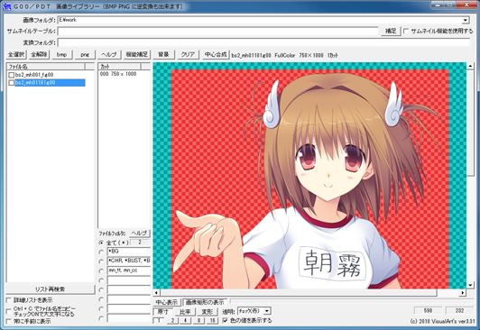
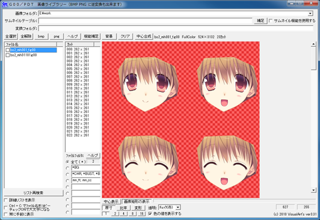
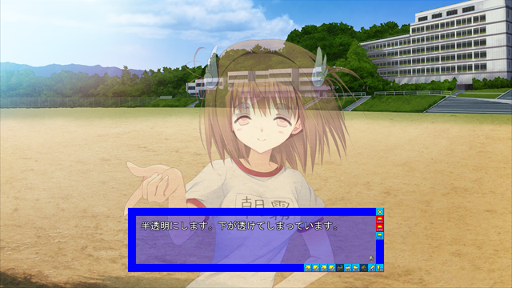
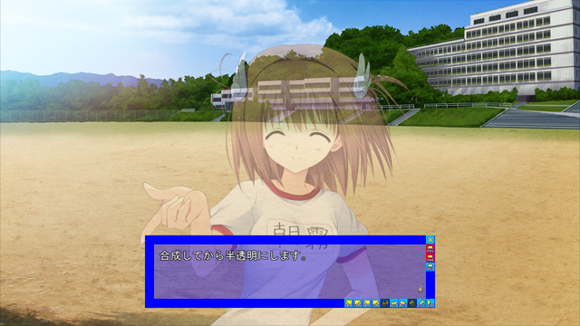

スクリプトマニュアル ＞ オブジェクト ＞ オブジェクトを重ねて読み込む ＞ オブジェクトを重ねて読み込む
オブジェクトを重ねて読み込むオブジェクトに画像を読み込むオブジェクトを重ねて読み込む機能です。   上のように、立ち絵と顔差分を分けて作成し、重ねて表示することがよくあると思います。
front.object[0].create("bg003", 1)
front.object[1].create("bs2_mh01101", 1, 640, 200)
front.object[2].create("bs2_mh001_f", 1, 640, 200)
front.object[2].patno = 2
普通に重ねるだけなら問題ありません。 ところが、これを半透明で表示したいとします。
front.object[0].create("bg003", 1)
front.object[1].create("bs2_mh01101", 1, 640, 200)
front.object[2].create("bs2_mh001_f", 1, 640, 200)
front.object[2].patno = 2
front.object[1].tr = 128
front.object[2].tr = 128
 失敗例です。 下地、差分それぞれを半透明にするので、下地の表情が透けてしまっています。 これを防ぐには、「あらかじめ重ねた状態で読み込む」必要があります。
front.object[0].create("bg003", 1)
front.object[1].create("bs2_mh01101 | bs2_mh001_f(0, 0, 2)", 1, 640, 200)
front.object[1].tr = 128
 重ねて読み込んでから半透明にしました。 使い方画像を重ねて読み込むには、"file1 | file2" のようにファイル名を続けて指定します。
front.object[0].create("bs2_mh01101 | bs2_mh001_f", 1, 0, 0)
文字列変数を使っている場合は以下のようになります。
s[0] = "bs2_mh01101"
s[1] = "bs2_mh001_f"
front.object[0].create(s[0] + "|" + s[1], 1, 0, 0)
// s[0] | s[1] としてしまう間違いが多いです。注意して下さい。
重ねる位置やパターン番号を指定することもできます。 ファイル名の後ろに "(x, y, patno)" をつけます。
front.object[0].create("bs2_mh01101 | bs2_mh001_f(0, 0, 2)", 1, 0, 0)
こちらも、例えばパターン番号を変数にしている場合は以下のようになります。 s[0] = "bs2_mh01101" s[1] = "bs2_mh001_f" a[0] = 2 front.object[0].create(s[0] + "|" + s[1] + "(0, 0, " + math.tostr(a[0]) + ")", 1, 0, 0) 文字列をこのように使う例はあまりなかったので少し難しいですが、 「"bs2_mh01101 | bs2_mh001_f(0, 0, 2)" のような文字列を作る」という感覚でやってみて下さい。 |